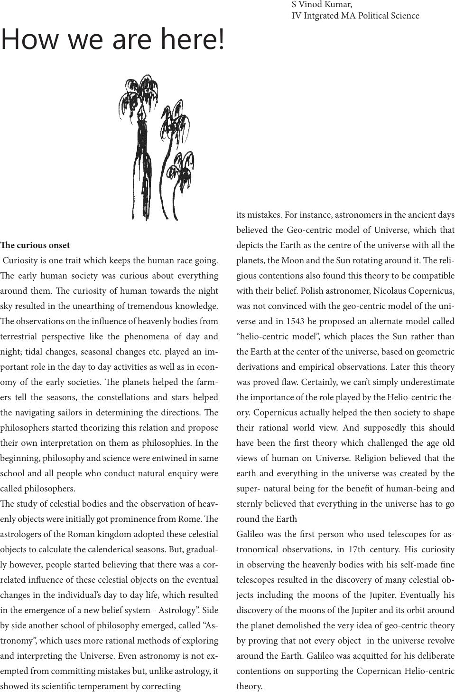

e curious onset
Curiosity is one trait which keeps the human race going.
e early human society was curious about everything
around them. e curiosity of human towards the night
sky resulted in the unearthing of tremendous knowledge.
e observations on the inuence of heavenly bodies from
terrestrial perspective like the phenomena of day and
night; tidal changes, seasonal changes etc. played an im-
portant role in the day to day activities as well as in econ-
omy of the early societies. e planets helped the farm-
ers tell the seasons, the constellations and stars helped
the navigating sailors in determining the directions. e
philosophers started theorizing this relation and propose
their own interpretation on them as philosophies. In the
beginning, philosophy and science were entwined in same
school and all people who conduct natural enquiry were
called philosophers.
e study of celestial bodies and the observation of heav-
enly objects were initially got prominence from Rome. e
astrologers of the Roman kingdom adopted these celestial
objects to calculate the calenderical seasons. But, gradual-
ly however, people started believing that there was a cor-
related inuence of these celestial objects on the eventual
changes in the individual’s day to day life, which resulted
in the emergence of a new belief system - Astrology”. Side
by side another school of philosophy emerged, called “As-
tronomy”, which uses more rational methods of exploring
and interpreting the Universe. Even astronomy is not ex-
empted from committing mistakes but, unlike astrology, it
showed its scientic temperament by correcting
its mistakes. For instance, astronomers in the ancient days
believed the Geo-centric model of Universe, which that
depicts the Earth as the centre of the universe with all the
planets, the Moon and the Sun rotating around it. e reli-
gious contentions also found this theory to be compatible
with their belief. Polish astronomer, Nicolaus Copernicus,
was not convinced with the geo-centric model of the uni-
verse and in 1543 he proposed an alternate model called
“helio-centric model”, which places the Sun rather than
the Earth at the center of the universe, based on geometric
derivations and empirical observations. Later this theory
was proved aw. Certainly, we can’t simply underestimate
the importance of the role played by the Helio-centric the-
ory. Copernicus actually helped the then society to shape
their rational world view. And supposedly this should
have been the rst theory which challenged the age old
views of human on Universe. Religion believed that the
earth and everything in the universe was created by the
super- natural being for the benet of human-being and
sternly believed that everything in the universe has to go
round the Earth
Galileo was the rst person who used telescopes for as-
tronomical observations, in 17th century. His curiosity
in observing the heavenly bodies with his self-made ne
telescopes resulted in the discovery of many celestial ob-
jects including the moons of the Jupiter. Eventually his
discovery of the moons of the Jupiter and its orbit around
the planet demolished the very idea of geo-centric theory
by proving that not every object in the universe revolve
around the Earth. Galileo was acquitted for his deliberate
contentions on supporting the Copernican Helio-centric
theory.
How we are here!
S Vinod Kumar,
IV Intgrated MA Political Science